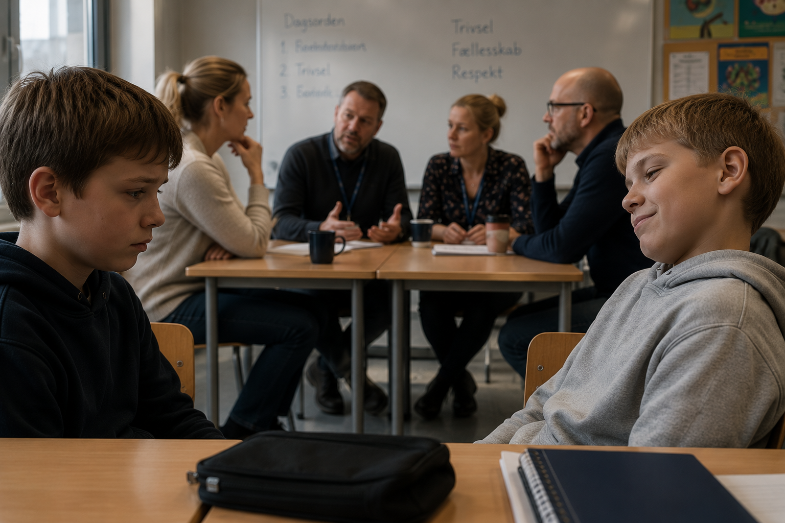
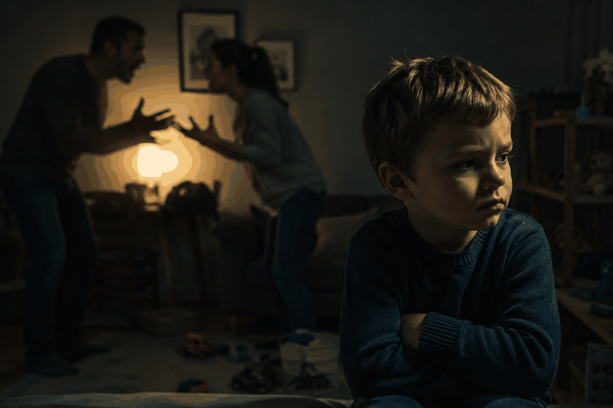

Fungerer maskulinitet egentlig bedst i sin mest toksiske form?

Skolegården, kl. 10:15, 1997
Du er ni år. En dreng i klassen har taget dit penalhus for tredje gang denne uge. Du går til læreren. Læreren siger "vi taler om det i klassen." Læreren samler klassen. Læreren siger "vi skal være gode ved hinanden." Drengen nikker. Læreren er tilfreds.
I frikvarteret tager han dit penalhus igen.
Du går til læreren igen. Læreren er lidt irriteret nu. "Jeg har jo talt med ham." Du går til dine forældre. Dine forældre ringer til skolen. Skolen indkalder til møde. Der bliver talt. Der bliver nikket. Alle er enige om at det er uacceptabelt.
Næste morgen tager han dit penalhus.
Så en dag slår du ham. Ikke hårdt. Ikke elegant. Bare en flad hånd der rammer hans kind, fordi noget i dig er holdt op med at tro på at voksnes ord ændrer noget.
Han tager aldrig dit penalhus igen.
Og nu har du et problem. For du har lige lært noget, som hele det pædagogiske system bruger årtier på at sige ikke er sandt: At vold virker.
Ikke at det er godt. Ikke at det er rigtigt. Men at det virker. Hurtigt, effektivt og uden opfølgningsmøde med en kontaktlærer der lugter af filterkaffe og opgivelse.
Det du lærte var ikke vold. Det var tilknytningsmønstret bag den.
Her skal vi nørde lidt. Hold ud. Det er det værd.
Psykologien opererer med fire overordnede tilknytningsmønstre. Du fik dit i de første leveår, og du bærer det med dig resten af livet. Det påvirker hvordan du håndterer konflikter, intimitet, frygt og ja: vold.

Tryg tilknytning. Du voksede op med voksne, der var nogenlunde forudsigelige. Når du var ked af det, blev du trøstet. Når du var vred, blev du mødt. Du lærte at konflikter kan løses gennem samtale, fordi samtale faktisk virkede i din verden. Du slår sjældent, fordi du sjældent har oplevet at det var nødvendigt.
Utryg-undvigende tilknytning. Du voksede op med voksne, der ikke rigtigt var til rådighed følelsesmæssigt. Du lærte at klare dig selv. Du viser sjældent sårbarhed, fordi sårbarhed aldrig blev mødt med omsorg. I konflikter trækker du dig. Ikke fordi du er kylling, men fordi du tidligt lærte at andre mennesker ikke er til at stole på, når det gælder. Du slår ikke. Men du forsvinder. Og det kan gøre lige så ondt.
Utryg-ambivalent tilknytning. Du voksede op med voksne, der var uforudsigelige. Nogle gange kærlige, nogle gange fraværende, nogle gange vrede, og du kunne aldrig regne ud hvornår. Du lærte at være på vagt hele tiden. At læse stemninger. At fylde rummet med din energi, bare for at sikre dig at du blev set. I konflikter eskalerer du, fordi det uudholdelige for dig ikke er smerten, men USIKKERHEDEN. Du vil hellere have det afklaret, også selvom afklaringen er en knytnæve.
Desorganiseret tilknytning. Du voksede op med voksne, der var både din kilde til tryghed OG din kilde til frygt. Den person der skulle beskytte dig, var den samme person der truede dig. Du lærte at verden er et paradoks. Du kan ikke flygte, for det farlige er det samme som det trygge. I konflikter fryser du, eller du eksploderer uforudsigeligt. Ikke fordi du er ude af kontrol, men fordi din krop aldrig lærte at kontrol er muligt.
Pointen er ikke at undskylde vold. Pointen er at forstå den. For de fleste mænd, der udøver vold, handler det ikke om lysten til at skade. Det handler om angsten for at blive ydmyget, forladt eller overset. Det handler om en krop der lærte, da den var fire år gammel, at verden er farlig, og at den eneste måde at overleve på er at være farligere.
Ingen har nogensinde fået bank og tænkt: "Det her bliver fantastisk for mit indre barn."
Den bløde mand og hans problem
Der er opstået en ny type mand de seneste ti år. Han kan tale om sine følelser. Han regulerer sit nervesystem. Han tager ansvar for sine mønstre. Gerne over en cortado til 58 kroner i Kødbyen, mens han ligner en mand der stadig kan skifte et bildæk uden at ringe til sin mor.
Alt det er godt. Oprigtigt godt.
Men den helt ufarlige mand har stadig svært ved at få respekt. Han bliver ofte behandlet lidt som feminister. Folk anerkender konceptet, men ingen er oprigtigt bange for dem.
Og det er et problem, der sjældent bliver adresseret i podcasts om sårbarhed og mandlig healing. For der er situationer, hvor blødheden simpelthen ikke virker. Hvor ordene løber ud i sandet. Hvor den eneste valuta, der accepteres, er den fysiske.
Han mener det som en joke. Men der er en sandhed i det, som de fleste akademikere ville have svært ved at imødegå.
Hele verden kører stadig på trusler
Og her er det, der virkelig bør give stof til eftertanke. Ikke bare for mænd i tracksuits. Men for alle der sidder i et pænt kontor og fordømmer vold, mens de nyder frugterne af et system der er bygget på præcis den kapacitet til vold, de fordømmer.
Ingen stormagt har nogensinde sagt: "Vi håber, I respekterer vores følelsesmæssige grænser."
De sender fregatter og mænd i camouflage, der kan lande i en skov kl. fire om morgenen og aflyse dit demokrati.
Politiet er vold organiseret af staten og legitimeret af loven. Fængslet er frihedsberøvelse med budget og personalepolitik. Grænsekontrol er territorial dominans med uniformer og høflige skilte.
Når staten udøver vold, kalder vi det "magtanvendelse." Når en mand fra Tingbjerg gør det, kalder vi det "kriminalitet." Forskellen er ikke vold eller ej. Forskellen er hvem der har papirerne i orden.
Det ubehagelige spørgsmål
Så lad os stille det spørgsmål, som ingen stiller i paneldebatten.
Er vold entydigt dårligt?
Hvis du er akademiker, er svaret selvfølgeligt ja. Vold er primitivt, ukonstruktivt og et tegn på manglende emotionel kapacitet.
Men spørg den niårige dreng, hvis penalhus blev taget hver dag, indtil han slog fra sig. Spørg kvinden der sparkede sin overfaldsmand i skridtet og løb. Spørg det land, der forsvarede sig mod en invasion, fordi diplomati ikke virkede.
Vold er ikke god. Men forestillingen om en verden helt uden den er en luksus, der kun eksisterer i rum, hvor nogen ANDRE allerede har sørget for sikkerheden med præcis den vold, du fordømmer.
Den trygge tilknytning, der gør at du kan sidde i din lejlighed på Frederiksberg og mene at dialog altid er svaret, er bygget oven på generationer af mennesker der slog fra sig, så du kunne slippe for det.
Det er værd at tænke over, næste gang du dømmer en mand for at bruge det eneste sprog, hans krop har lært.
Hvad gør man så?
Bande Bladet har ikke en løsning. Vi har en observation.
De fleste voldelige mænd er ikke voldelige, fordi de er onde. De er voldelige, fordi de er skadede. Og de er skadede, fordi nogen skadede dem, da de var for små til at forstå hvad der skete.
At fordømme vold uden at forstå dens rødder er som at skælde ud på en hund der bider, uden at spørge hvem der slog den først.
Og at forstå vold er ikke det samme som at acceptere den. Det er bare det første skridt mod at skabe mænd, der har ANDRE redskaber.
Men de redskaber skal komme et sted fra. Og lige nu vokser der drenge op i skolegårde over hele Danmark, der lærer præcis det samme som du lærte kl. 10:15 i 1997: At ordene ikke virker. At de voksne ikke kan beskytte dem. Og at den eneste der stoppede det, var dem selv.
Hvad fortæller vi dem?